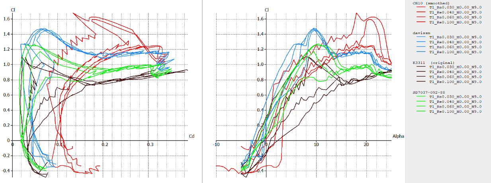
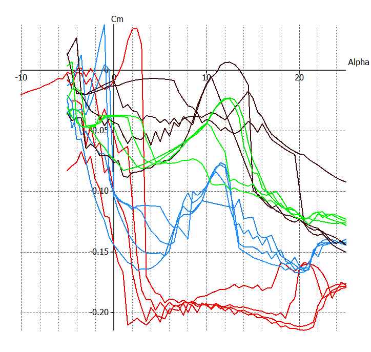
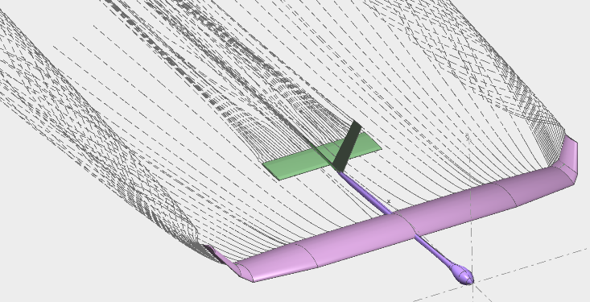
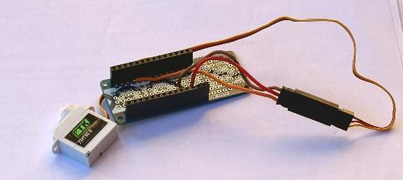
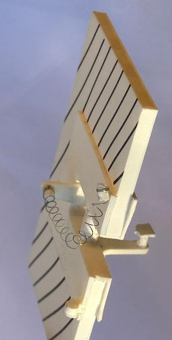
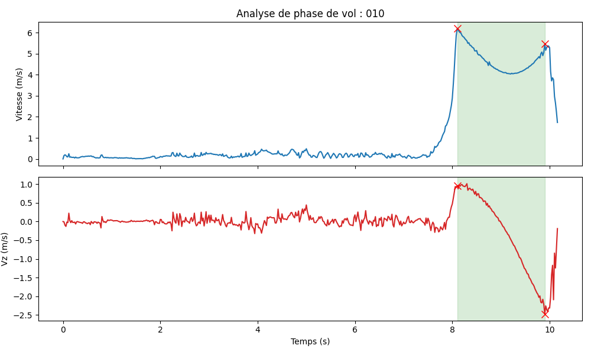
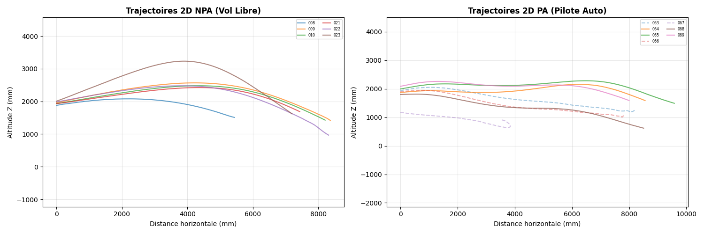
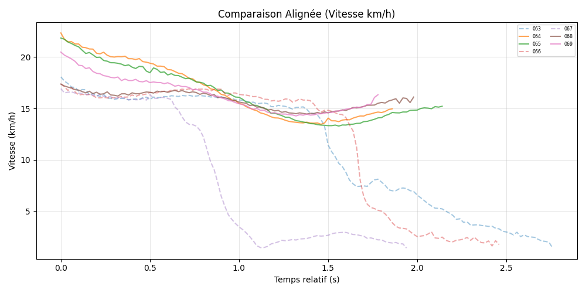

Planeur autonome : prototypage rapide et pilote automatique Autonomous glider: rapid prototyping and autopilot
Conception, fabrication et essais en vol d'un planeur de 1 m d'envergure optimisé pour le vol à vitesse minimale, stabilisé en tangage par un pilote automatique embarqué. Projet de dernière année du cycle ingénieur IPSA, réalisé en groupe avec Yoann Hoarau et Salomé Mathe. Design, build and flight testing of a 1 m wingspan glider optimized for minimum-speed flight, pitch-stabilized by an on-board autopilot. Final-year IPSA engineering project, carried out as a group with Yoann Hoarau and Salomé Mathe.

1. Mission et contraintes1. Mission and constraints
Le cahier des charges imposait une envergure d'au moins 1 mètre (les tiges de carbone structurelles ne pouvaient pas être coupées), le choix d'une mission parmi plusieurs, et l'intégration d'un pilote automatique sur un axe (le tangage). Nous avons choisi d'optimiser le vol à vitesse minimale : les essais avaient lieu dans la volière drone de l'ENAC, longue d'environ 10 mètres, où un vol lent et stable est la configuration la plus pertinente. Ce choix se paie en finesse, en taux de chute et en stabilité, et il pilote toute la conception : minimiser la charge alaire et maximiser la portance (surface alaire et Cz max). The specification required a wingspan of at least 1 metre (the structural carbon rods could not be cut), a mission chosen among several options, and a single-axis autopilot (pitch). We chose to optimize minimum-speed flight: the tests took place in ENAC's drone aviary, about 10 metres long, where slow, stable flight is the most relevant configuration. This choice costs glide ratio, sink rate and stability, and it drives the whole design: minimize wing loading and maximize lift (wing area and Cz max).
2. Aérodynamique à bas nombre de Reynolds2. Low Reynolds number aerodynamics
Avec une corde de 80 à 200 mm et une vitesse cible de 10 à 25 km/h, le planeur vole entre Re = 2·10⁴ et 9·10⁴. Dans ce régime, la couche limite reste laminaire longtemps, se sépare précocement et forme des bulles de séparation laminaire : moins de portance, beaucoup plus de traînée, un vol difficile à contrôler. Après un état de l'art des familles de profils adaptées (Selig, Drela, Eppler), nous avons comparé sous XFLR5 / XFOIL les polaires de cinq profils (CH10sm, davissm, K3311, SD7032, SD7037) sur quatre critères : Cz max élevé, décrochage progressif à forte incidence, moment de tangage stable, et traînée minimale près de Cz max. With a chord of 80 to 200 mm and a target speed of 10 to 25 km/h, the glider flies between Re = 2·10⁴ and 9·10⁴. In this regime the boundary layer stays laminar for a long time, separates early and forms laminar separation bubbles: less lift, much more drag, and flight that is hard to control. After a state-of-the-art review of the airfoil families suited to this regime (Selig, Drela, Eppler), we compared the polars of five airfoils (CH10sm, davissm, K3311, SD7032, SD7037) in XFLR5 / XFOIL against four criteria: high Cz max, progressive stall at high incidence, stable pitching moment, and minimal drag near Cz max.

Le CH10sm (série Drela CH, conçue pour les très bas Reynolds) l'a emporté : Cz max d'environ 1,6, décrochage progressif (courbe arrondie au sommet, l'assurance de voler lentement sans perdre brusquement la portance), et un coefficient de moment remarquablement plat entre 2° et 15°, donc un centre de poussée fixe et un vol prévisible même en rafale. Le davissm avait une traînée plus faible et un Cz comparable, mais son décrochage instable et précoce l'a disqualifié : dans notre contexte, la douceur du décrochage vaut plus que la traînée. La contrepartie du CH10sm est un fort moment piqueur (Cm ≈ -0,20), visible sur la Figure 3, qui exige un bras de levier de queue et un empennage bien dimensionnés. The CH10sm (Drela CH series, designed for very low Reynolds) won: Cz max of about 1.6, progressive stall (rounded lift-curve top, the guarantee of flying slowly without suddenly losing lift), and a remarkably flat moment coefficient between 2° and 15°, hence a fixed centre of pressure and predictable flight even in gusts. The davissm airfoil had lower drag and a comparable Cz, but its unstable, early stall disqualified it: in our context, stall gentleness is worth more than drag. The CH10sm's trade-off is a strong nose-down moment (Cm ≈ -0.20), visible in Figure 3, which demands a properly sized tail lever arm and stabilizer.

Les choix de dimensionnement découlent de cette sélection. Incidence ciblée de 16° (Cz = 1,4, en retrait du Cz max instable à 18°) et surface portante de 0,156 m² pour une vitesse cible de 5 m/s. Le calage de l'aile a été poussé à 6° (contre 4° usuels) pour réduire l'assiette et la traînée du fuselage en vol lent, avec une réserve mécanique de -3° dans la pièce d'attache si l'incidence s'avérait excessive. L'aile est en deux parties : corde de 180 mm au centre, où la tige de carbone passe à 25 % de la corde (le centre aérodynamique, pour annuler la torsion induite par le moment de tangage), et effilement à 140 mm au saumon (effilement 0,778), la corde minimale acceptable avant que la tige ne fragilise les nervures de balsa. Ce compromis rapproche la répartition de portance de la distribution elliptique optimale. Un fichier Excel développé pour le projet centralisait tous ces paramètres : foyer global, cordes aérodynamiques moyennes, position des nervures. The sizing decisions follow from that selection. Target incidence of 16° (Cz = 1.4, backing off from the unstable Cz max at 18°) and a 0.156 m² lifting surface for a 5 m/s target speed. The wing setting angle was pushed to 6° (versus the usual 4°) to lower the fuselage attitude and its drag in slow flight, with a mechanical fallback of -3° in the attachment part in case the incidence proved excessive. The wing is built in two parts: a 180 mm root chord, where the carbon rod passes at 25% chord (the aerodynamic centre, cancelling the torsion induced by the pitching moment), tapering to 140 mm at the tip (taper ratio 0.778), the minimum acceptable chord before the rod weakens the balsa ribs. This compromise brings the lift distribution close to the optimal elliptical one. A spreadsheet developed for the project centralized all these parameters: global neutral point, mean aerodynamic chords, rib positions.

3. Stabilité : winglets et empennage en V3. Stability: winglets and V-tail
La tige de carbone rectiligne interdit tout dièdre d'aile (1,06° seulement), et les analyses de stabilité dynamique XFLR5 le confirment : le mode spiral est instable. En cas d'inclinaison, le planeur tend à accentuer son virage au lieu de revenir à plat. Deux remèdes ont été étudiés. Des winglets inclinés à 35° augmentent le dièdre effectif et ralentissent la divergence sans la supprimer. Le passage d'un empennage vertical classique à un empennage en V introduit du dièdre effectif à l'arrière : le temps de doublement du mode spiral passe de 15 s à 40 s et l'amortissement du mode phugoïde de 0,33 à 0,43. En vol, les deux configurations se sont montrées satisfaisantes. The straight carbon rod forbids any wing dihedral (only 1.06°), and XFLR5 dynamic stability analyses confirm the consequence: the spiral mode is unstable. When banked, the glider tends to tighten its turn instead of returning to level. Two remedies were studied. Winglets tilted at 35° increase the effective dihedral and slow the divergence without removing it. Switching from a classical vertical tail to a V-tail introduces effective dihedral at the rear: the spiral-mode doubling time goes from 15 s to 40 s and the phugoid damping ratio from 0.33 to 0.43. In flight, both configurations proved satisfactory.
4. Structure et fabrication4. Structure and manufacturing
La structure combine des nervures de balsa de 2,5 mm découpées au laser (140 kg/m³, bien plus léger que le PLA imprimé), un entoilage thermorétractable Oracover, deux tiges de carbone creuses de 10 × 10 × 1000 mm et des pièces imprimées en 3D (PLA Aero, Bambulab A1) conçues sous Onshape. Un fichier Excel de dimensionnement développé pour le projet calculait le foyer global, les cordes aérodynamiques moyennes et le nombre de nervures. La pièce centrale, qui reprend tous les efforts de torsion entre les deux tiges, a cassé au serrage : l'analyse structurelle (CATIA V5) a montré une traction dans un angle défavorable au sens d'impression 3D. Elle a été réimprimée en PETG dans un sens d'impression adapté. Le cockpit loge l'électronique, la batterie et le servomoteur, et son dimensionnement a été guidé par le centrage : le bras de levier de l'empennage impose un centre de gravité légèrement avant. The structure combines 2.5 mm laser-cut balsa ribs (140 kg/m³, far lighter than printed PLA), a heat-shrink Oracover covering film, two hollow 10 × 10 × 1000 mm carbon rods and 3D-printed parts (PLA Aero, Bambulab A1) designed in Onshape. A sizing spreadsheet developed for the project computed the global neutral point, mean aerodynamic chords and rib count. The central part, which carries all the torsional loads between the two rods, cracked during tightening: structural analysis (CATIA V5) showed tension in a corner unfavourable to the 3D print orientation. It was reprinted in PETG with a proper print orientation. The cockpit houses the electronics, battery and servo, and its sizing was driven by balance: the tail's lever arm forces a slightly forward centre of gravity.
5. Électronique embarquée et commande de gouverne5. On-board electronics and control linkage
Le système embarqué repose sur un Arduino MKR WiFi 1010, un shield MKR IMU (accéléromètre et gyroscope) et un proto shield pour les soudures, pilotant un servomoteur de 5 g relié à l'empennage horizontal par fil de nylon. Deux liaisons ont été testées en vol. Le pull-string (un fil contre un ressort de torsion) est léger et simple, mais la gouverne oscillait en vol malgré un ressort très tendu. Le pull-pull (deux fils montés en opposition sur un palonnier double) l'a remplacé : aucune zone morte au neutre, jeu mécanique éliminé, oscillations supprimées, et l'élasticité du nylon amortit naturellement les chocs sur la gouverne. Un enregistreur de données embarqué capture accélérations et vitesses angulaires à 50 Hz ; le planeur génère ensuite son propre point d'accès WiFi et les données se téléchargent en CSV ou JSON via une petite interface web. The on-board system is built around an Arduino MKR WiFi 1010, an MKR IMU shield (accelerometer and gyroscope) and a proto shield for the soldered connections, driving a 5 g servo linked to the horizontal tail with nylon line. Two linkages were flight-tested. The pull-string (one line against a torsion spring) is light and simple, but the control surface oscillated in flight despite a tight spring. The pull-pull (two lines mounted in opposition on a double servo horn) replaced it: no dead zone around neutral, mechanical play eliminated, oscillations gone, and the nylon's slight elasticity naturally damps shocks on the surface. An on-board data logger captures accelerations and angular rates at 50 Hz; the glider then spawns its own WiFi access point and the data is downloaded as CSV or JSON through a small web interface.
Côté intégration, le proto shield sert de support de câblage : les fils du servomoteur y sont soudés sur trois broches (VCC, GND et la sortie A2 qui génère le signal de commande), ce qui évite toute modification directe des cartes Arduino et IMU, partagées avec les autres groupes. On the integration side, the proto shield serves as the wiring platform: the servo wires are soldered onto three pins (VCC, GND and the A2 output that generates the command signal), avoiding any direct modification of the Arduino and IMU boards, which were shared with the other groups.


6. Le pilote automatique : pourquoi un PID sans modèle6. The autopilot: why a model-free PID
L'approche théorique classique (représentation d'état, retour d'état calculé sur les dérivées de stabilité) suppose des coefficients aérodynamiques connus et un modèle linéaire. À très bas Reynolds, ces coefficients sont instables et non linéaires (décollements, bulles laminaires) : impossible de les estimer de façon fiable avec XFLR5. Nous avons donc écarté la commande par retour d'état au profit d'un correcteur PID sans modèle, dont les gains se règlent expérimentalement, lancer après lancer. The classical theoretical approach (state-space model, state feedback computed from stability derivatives) assumes known aerodynamic coefficients and a linear model. At very low Reynolds numbers these coefficients are unstable and nonlinear (separation, laminar bubbles): they cannot be reliably estimated with XFLR5. We therefore set aside conventional state feedback in favour of a model-free PID controller, whose gains are tuned experimentally, launch after launch.
L'asservissement tourne à 100 Hz sur l'Arduino : l'IMU fournit l'angle de tangage, l'erreur par rapport à la consigne (vol à plat) alimente le PID, et une fonction de mapping asymétrique convertit la sortie en angle servo dans les limites mécaniques de la gouverne (neutre à 133°, bornes 80° et 180°), garantissant qu'aucune commande destructive n'est jamais envoyée. Gains retenus : Kp = 2,0 pour la réactivité immédiate, Ki = 0,2 pour trimmer automatiquement l'erreur statique due au centrage, Kd = 0,1 pour amortir les oscillations et éviter le dépassement. The control loop runs at 100 Hz on the Arduino: the IMU provides the pitch angle, the error against the setpoint (level flight) feeds the PID, and an asymmetric mapping function converts the output into a servo angle within the control surface's mechanical limits (neutral at 133°, bounds 80° and 180°), guaranteeing that no destructive command is ever sent. Selected gains: Kp = 2.0 for immediate reactivity, Ki = 0.2 to automatically trim the static error caused by the balance, Kd = 0.1 to damp oscillations and avoid overshoot.
Le réglage s'est fait lancer après lancer, en s'appuyant sur l'effet classique de chaque gain sur la réponse : Tuning was done launch after launch, guided by each gain's classical effect on the response:
| GainGain | Temps de montéeRise time | DépassementOvershoot | Temps de réponseSettling time | Erreur statiqueStatic error |
|---|---|---|---|---|
| Kp = 2,0 | DiminueDecreases | AugmenteIncreases | Faible effetSmall effect | DiminueDecreases |
| Ki = 0,2 | DiminueDecreases | AugmenteIncreases | AugmenteIncreases | ÉlimineEliminates |
| Kd = 0,1 | Faible diminutionSmall decrease | DiminueDecreases | DiminueDecreases | Aucun effetNo effect |
7. Essais en vol et résultats7. Flight tests and results
Deux campagnes d'essais ont eu lieu dans la volière drone de l'ENAC. Le premier vol
(décembre 2025) a surtout livré des leçons structurelles : renforcement du bord
d'attaque, refonte des fixations, et passage au pull-pull. Lors du second (janvier
2026), des caméras infrarouges ont enregistré la position du planeur en vol, ce qui a
permis une analyse comparative quantitative entre vols libres (NPA)
et vols sous pilote automatique (PA). Un script Python isole automatiquement les
phases de vol dans les enregistrements par détection de pics
(scipy.signal.find_peaks) sur la vitesse absolue.
Two test campaigns took place in ENAC's drone aviary. The first flight (December
2025) mostly delivered structural lessons: leading-edge reinforcement, redesigned
fixtures, and the switch to the pull-pull linkage. During the second (January 2026),
infrared cameras recorded the glider's position in flight, enabling a
quantitative comparative analysis between free flights (no
autopilot) and autopilot-assisted flights. A Python script automatically isolates the
flight phases in the recordings by peak detection
(scipy.signal.find_peaks) on the absolute speed.



Le pilote automatique s'est montré efficace dès le lancer, avec des corrections nettes et visibles en vol. Il lisse la trajectoire en cloche du vol libre, maintient l'assiette constante, et a permis au planeur de voler sur plus de 10 mètres en extérieur. La stratégie pragmatique (un PID réglé expérimentalement plutôt qu'une synthèse théorique sur des paramètres incertains) est validée par les données. The autopilot proved effective from the moment of launch, with clear, visible corrections in flight. It smooths out the free flight's bell-shaped trajectory, holds a constant attitude, and allowed the glider to fly more than 10 metres outdoors. The pragmatic strategy (an experimentally tuned PID rather than a theoretical synthesis built on uncertain parameters) is validated by the data.
8. Bilan8. Takeaways
Ce projet couvre la chaîne complète de l'ingénierie aéronautique à petite échelle : état de l'art, dimensionnement théorique, simulation (XFLR5), CAO, prototypage rapide (découpe laser, impression 3D), électronique embarquée, loi de commande et validation expérimentale par deux campagnes d'essais en vol. Chaque casse structurelle et chaque instabilité ont conduit à une itération de conception documentée. Parmi les perspectives : un tube de Pitot ou un positionnement externe pour affiner la loi de commande, l'IMU seule ayant montré ses limites pour la trajectographie précise. This project covers the complete small-scale aeronautical engineering chain: state-of-the-art review, theoretical sizing, simulation (XFLR5), CAD, rapid prototyping (laser cutting, 3D printing), embedded electronics, control law and experimental validation through two flight-test campaigns. Every structural failure and every instability led to a documented design iteration. Among the perspectives: a Pitot tube or external positioning to refine the control law, since the IMU alone showed its limits for precise trajectory reconstruction.
← Retour aux projets← Back to projects